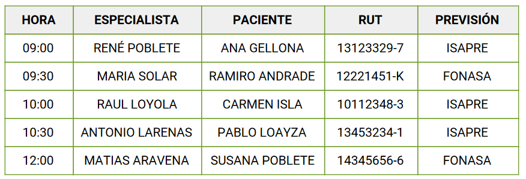

El centro médico dental de Ñuñoa se ha puesto en contacto una vez más con usted, para que desarrolle algunas modificaciones con respecto a sus consultas médicas y desplegar otra información que se le indicará más adelante. En esta ocasión, le piden hacer modificaciones a la página HTML que disponen, por lo que se le entrega el código de la página para que realice su trabajo. Dentro del código, se le señala donde tiene que realizar las modificaciones.
Como regla, usted no puede eliminar ni modificar los datos que están en el interior de los arreglos y objetos de manera permanente. Todas las modificaciones solicitadas deben hacerse mediante el uso de funciones integradas en arreglos y objetos, como push(), shift(), split(), entre otras que estime conveniente.
1. Agregar las siguientes horas al arreglo de Traumatología.
2. Eliminar el primer y último elemento del arreglo de Radiología.
3. Imprimir en la página HTML, mediante document.write y/o la funciones que estime conveniente, la lista de consultas médicas de Dental. Sin embargo, debe hacerlo separando por un guión cada dato desplegado y cada fila de información debe estar separada por un párrafo.
Ejemplo:
8:30 - ANDREA ZUÑIGA - MARCELA RETAMAL - 11123425-6 - ISAPRE
11:00 - MARIA PIA ZAÑARTU - ANGEL MUÑOZ - 9878789-2 - ISAPRE...
4. Imprimir un listado total de todos los pacientes que se atendieron en el centro médico. Para esto, deberá unir todos los nombres de pacientes e imprimir uno por cada párrafo.
Ejemplo:
FRANCISCA ROJAS
PAMELA ESTRADA
ARMANDO LUNA...
| PACIENTES |
|---|
5. Filtrar aquellos pacientes que indican ser de ISAPRE en la lista de consultas médicas de Dental.
Ejemplo:
MARCELA RETAMAL - ISAPRE
ANGEL MUÑOZ - ISAPRE
ANA SEPULVEDA - ISAPRE
6. Filtrar aquellos pacientes que indican ser de FONASA en la lista de consultas médicas de Traumatología.
Ejemplo:
PAULA SÁNCHEZ - FONASA